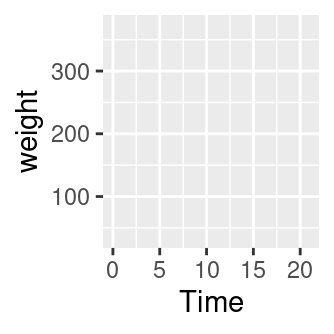
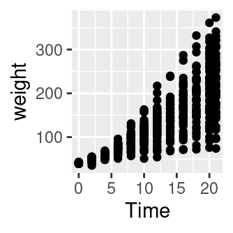
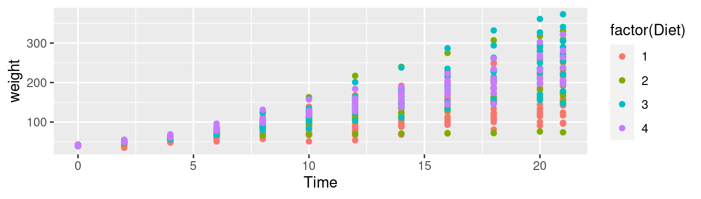
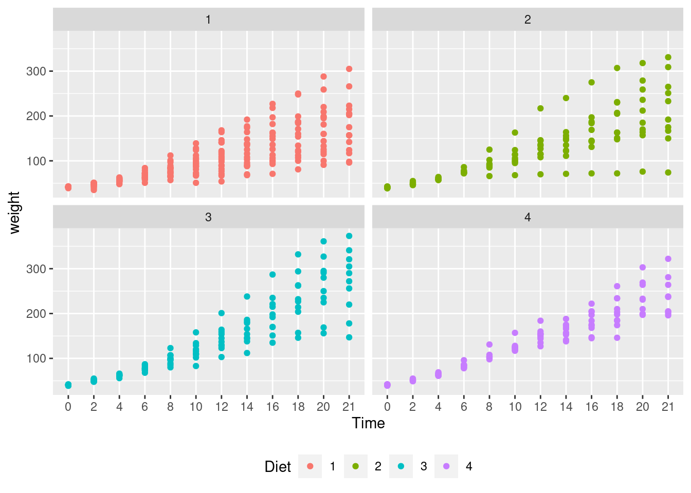
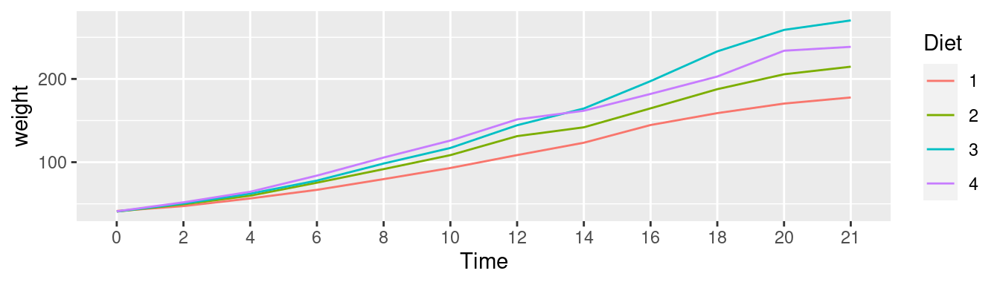
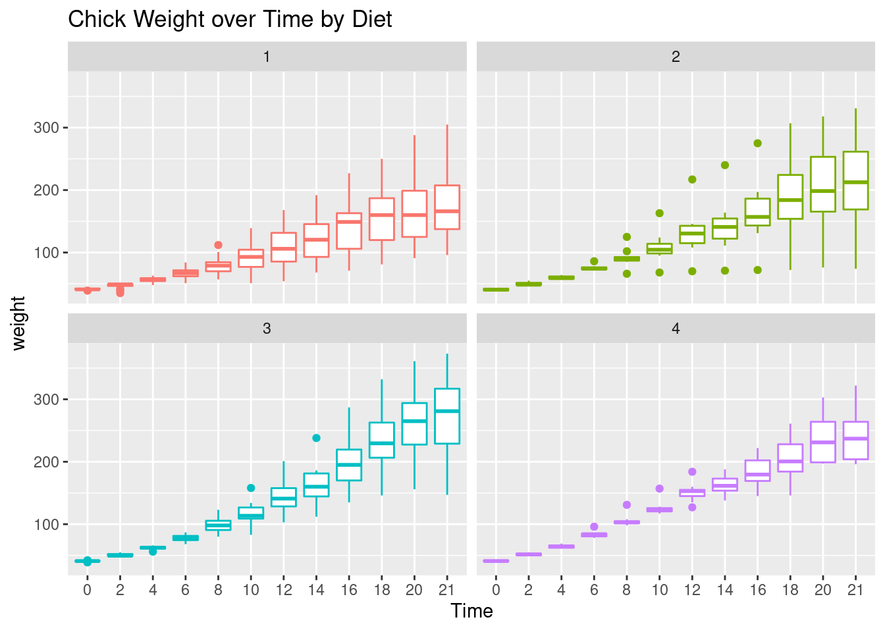
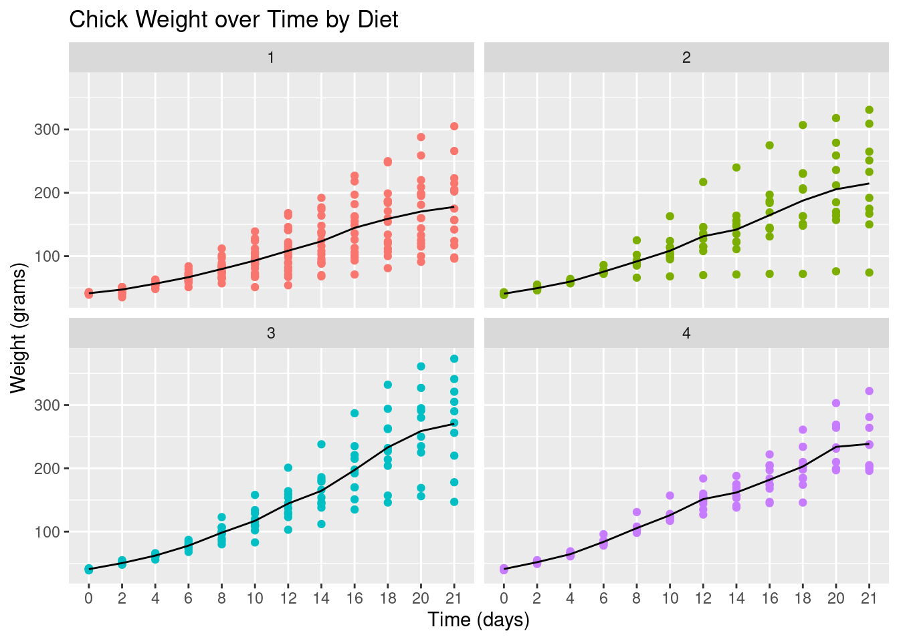

1.7 Tidyverse
The tidyverse package is a collection of packages that lets you import,
manipulate, explore, visualize and model data in a harmonized and consistent way which
helps you to be more productive.
Installing the tidyverse package:
install.packages("tidyverse")To use the tidyverse package load it using the library() function:
library(tidyverse)Chick Weight Data
R comes with many datasets installed. We will use the ChickWeight dataset
to learn about the tidyverse. The help system gives a basic summary of the experiment from
which the data was collect:
“The body weights of the chicks were measured at birth and every second day thereafter until day 20. They were also measured on day 21. There were four groups of chicks on different protein diets.”
You can get more information, including references by typing:
help("ChickWeight")The Data: There are 578 observations (rows) and 4 variables:
Chick– unique ID for each chick.Diet– one of four protein diets.Time– number of days since birth.weight– body weight of chick in grams.
Note: weight has a lower case w (recall R is case sensitive).
Store the data locally:
ChickWeight %>%
select(Chick, Diet, Time, weight) %>%
arrange(Chick, Diet, Time) %>%
write_csv("ChickWeight.csv")First we will import the data from a file called ChickWeight.csv using the read_csv()
function from the readr package (part of the tidyverse). The first thing to do,
outside of R, is to open the file ChickWeight.csv to check what it contains and that
it makes sense. Now we can import the data as follows:
CW <- read_csv("ChickWeight.csv")If all goes well then the data is now stored in an R object called CW. If you get the
following error message then you need to change the working directory to where the data is
stored.
Error: 'ChickWeight.csv' does not exist in current
working directory ...Changing the working directory:
In RStudio you can use the menu bar (“Session - Set Working Directory - Choose Directory…”). Alternatively, you can use the function setwd().
Looking at the Dataset: To look at the data type just type the object (dataset) name:
CW
#> # A tibble: 578 × 4
#> Chick Diet Time weight
#> <dbl> <dbl> <dbl> <dbl>
#> 1 18 1 0 39
#> 2 18 1 2 35
#> 3 16 1 0 41
#> 4 16 1 2 45
#> 5 16 1 4 49
#> 6 16 1 6 51
#> 7 16 1 8 57
#> 8 16 1 10 51
#> 9 16 1 12 54
#> 10 15 1 0 41
#> # … with 568 more rowsIf there are too many variables then not all them may be printed. To overcome this issue
we can use the glimpse() function which makes it possible to see every column in your
dataset (called a “data frame” in R speak).
glimpse(CW)
#> Rows: 578
#> Columns: 4
#> $ Chick <dbl> 18, 18, 16, 16, 16, 16, 16, 16, 16, 15, 15, 15, 15, 15, 15, 15, 15, 13, 1…
#> $ Diet <dbl> 1, 1, 1, 1, 1, 1, 1, 1, 1, 1, 1, 1, 1, 1, 1, 1, 1, 1, 1, 1, 1, 1, 1, 1, 1…
#> $ Time <dbl> 0, 2, 0, 2, 4, 6, 8, 10, 12, 0, 2, 4, 6, 8, 10, 12, 14, 0, 2, 4, 6, 8, 10…
#> $ weight <dbl> 39, 35, 41, 45, 49, 51, 57, 51, 54, 41, 49, 56, 64, 68, 68, 67, 68, 41, 4…The function View() allows for a spread-sheet type of view on the data:
View(CW)1.7.1 Tidyverse: Plotting Basics
To visualise the chick weight data, we will use the ggplot2 package (part of the
tidyverse). Our interest is in seeing how the weight changes over time for the chicks by
diet. For the moment don’t worry too much about the details just try to build your own
understanding and logic. To learn more try different things even if you get an error
messages.
Let’s plot the weight data (vertical axis) over time (horizontal axis).
# An empty plot (the plot on the left)
ggplot(CW, aes(Time, weight))
# With data (the plot on the right)
ggplot(CW, aes(Time, weight)) + geom_point() 
Add color for Diet. The graph above does not differentiate between the diets. Let’s use a different color for
each diet.
# Adding colour for diet
ggplot(CW,aes(Time,weight,colour=factor(Diet))) +
geom_point() 
It is difficult to conclude anything from this graph as the points are printed on top of one another (with diet 1 underneath and diet 4 at the top).
Factor Variables:
Before we continue, we have to make an important change to the CW dataset by making
Diet and Time factor variables. This means that R will treat them as categorical
variables (see the <fct> variables below) instead of continuous variables. It will
simplify our coding. The next section will explain the mutate() function.
CW <- mutate(CW, Diet = factor(Diet))
CW <- mutate(CW, Time = factor(Time))
glimpse(CW)
#> Rows: 578
#> Columns: 4
#> $ Chick <dbl> 18, 18, 16, 16, 16, 16, 16, 16, 16, 15, 15, 15, 15, 15, 15, 15, 15, 13, 1…
#> $ Diet <fct> 1, 1, 1, 1, 1, 1, 1, 1, 1, 1, 1, 1, 1, 1, 1, 1, 1, 1, 1, 1, 1, 1, 1, 1, 1…
#> $ Time <fct> 0, 2, 0, 2, 4, 6, 8, 10, 12, 0, 2, 4, 6, 8, 10, 12, 14, 0, 2, 4, 6, 8, 10…
#> $ weight <dbl> 39, 35, 41, 45, 49, 51, 57, 51, 54, 41, 49, 56, 64, 68, 68, 67, 68, 41, 4…The facet_wrap() function: To plot each diet separately in a grid using facet_wrap():
# Adding jitter to the points
ggplot(CW, aes(Time, weight, colour=Diet)) +
geom_point() +
facet_wrap(~Diet) +
theme(legend.position = "bottom")
Interpretation: Diet 4 has the least variability but we can’t really say anything about the mean effect of each diet although diet 3 seems to have the highest.
Next we will plot the mean changes over time for each diet using the stat_summary() function:
ggplot(CW, aes(Time, weight,
group=Diet, colour=Diet)) +
stat_summary(fun="mean", geom="line") 
Interpretation: We can see that diet 3 has the highest mean weight gains by the end of the experiment. However, we don’t have any information about the variation (uncertainty) in the data.
To see variation between the different diets we use geom_boxplot to plot a box-whisker plot.
A note of caution is that the number of chicks per diet is relatively low to produce this plot.
ggplot(CW, aes(Time, weight, colour=Diet)) +
facet_wrap(~Diet) +
geom_boxplot() +
theme(legend.position = "none") +
ggtitle("Chick Weight over Time by Diet")
Interpretation: Diet 3 seems to have the highest “average” weight gain but it has more variation than diet 4 which is consistent with our findings so far.
Let’s finish with a plot that you might include in a publication.
ggplot(CW, aes(Time, weight, group=Diet,
colour=Diet)) +
facet_wrap(~Diet) +
geom_point() +
# geom_jitter() +
stat_summary(fun="mean", geom="line",
colour="black") +
theme(legend.position = "none") +
ggtitle("Chick Weight over Time by Diet") +
xlab("Time (days)") +
ylab("Weight (grams)")
1.7.2 Tidyverse: Data Wrangling Basics
In this section we will learn how to wrangle (manipulate) datasets using the tidyverse
package. Let’s start with the mutate(), select(), rename(), filter() and arrange()
functions.
mutate(): Adds a new variable (column) or modifies an existing one. We already used this above to create
factor variables.
# Added a column
CWm1 <- mutate(CW, weightKg = weight/1000)
CWm1
#> # A tibble: 578 × 5
#> Chick Diet Time weight weightKg
#> <dbl> <fct> <fct> <dbl> <dbl>
#> 1 18 1 0 39 0.039
#> 2 18 1 2 35 0.035
#> 3 16 1 0 41 0.041
#> # … with 575 more rows
# Modify an existing column
CWm2 <- mutate(CW, Diet = str_c("Diet ", Diet))
CWm2
#> # A tibble: 578 × 4
#> Chick Diet Time weight
#> <dbl> <chr> <fct> <dbl>
#> 1 18 Diet 1 0 39
#> 2 18 Diet 1 2 35
#> 3 16 Diet 1 0 41
#> # … with 575 more rows
select(): Keeps, drops or reorders variables.
# Drop the weight variable from CWm1 using minus
select(CWm1, -weight)
#> # A tibble: 578 × 4
#> Chick Diet Time weightKg
#> <dbl> <fct> <fct> <dbl>
#> 1 18 1 0 0.039
#> 2 18 1 2 0.035
#> 3 16 1 0 0.041
#> # … with 575 more rows
# Keep variables Time, Diet and weightKg
select(CWm1, Chick, Time, Diet, weightKg)
#> # A tibble: 578 × 4
#> Chick Time Diet weightKg
#> <dbl> <fct> <fct> <dbl>
#> 1 18 0 1 0.039
#> 2 18 2 1 0.035
#> 3 16 0 1 0.041
#> # … with 575 more rows
rename(): Renames variables whilst keeping all variables.
rename(CW, Group = Diet, Weight = weight)
#> # A tibble: 578 × 4
#> Chick Group Time Weight
#> <dbl> <fct> <fct> <dbl>
#> 1 18 1 0 39
#> 2 18 1 2 35
#> 3 16 1 0 41
#> # … with 575 more rows
filter(): Keeps or drops observations (rows).
filter(CW, Time==21 & weight>300)
#> # A tibble: 8 × 4
#> Chick Diet Time weight
#> <dbl> <fct> <fct> <dbl>
#> 1 7 1 21 305
#> 2 29 2 21 309
#> 3 21 2 21 331
#> # … with 5 more rowsFor comparing values in vectors use: < (less than), > (greater than), <=
(less than and equal to), >= (greater than and equal to), == (equal to) and !=
(not equal to). These can be combined logically using & (and) and | (or).
arrange(): Changes the order of the observations.
arrange(CW, Chick, Time)
#> # A tibble: 578 × 4
#> Chick Diet Time weight
#> <dbl> <fct> <fct> <dbl>
#> 1 1 1 0 42
#> 2 1 1 2 51
#> 3 1 1 4 59
#> # … with 575 more rows
arrange(CW, desc(weight))
#> # A tibble: 578 × 4
#> Chick Diet Time weight
#> <dbl> <fct> <fct> <dbl>
#> 1 35 3 21 373
#> 2 35 3 20 361
#> 3 34 3 21 341
#> # … with 575 more rowsWhat does the desc() do? Try using desc(Time).
1.7.3 The pipe operator %>%
In reality you will end up doing multiple data wrangling steps that you want to save.
The pipe operator %>% makes your code nice and readable:
CW21 <- CW %>%
filter(Time %in% c(0, 21)) %>%
rename(Weight = weight) %>%
mutate(Group = factor(str_c("Diet ", Diet))) %>%
select(Chick, Group, Time, Weight) %>%
arrange(Chick, Time)
CW21
#> # A tibble: 95 × 4
#> Chick Group Time Weight
#> <dbl> <fct> <fct> <dbl>
#> 1 1 Diet 1 0 42
#> 2 1 Diet 1 21 205
#> 3 2 Diet 1 0 40
#> # … with 92 more rowsHint: To understand the code above we should read the pipe operator %>% as “then”.
Create a new dataset (object) called
CW21using datasetCWthen keep the data for days 0 and 21 then rename variableweighttoWeightthen create a variable calledGroupthen keep variablesChick,Group,TimeandWeightand then finally arrange the data by variablesChickandTime.
This is the same code:
CW21 <- CW %>%
filter(., Time %in% c(0, 21)) %>%
rename(., Weight = weight) %>%
mutate(., Group=factor(str_c("Diet ",Diet))) %>%
select(., Chick, Group, Time, Weight) %>%
arrange(., Chick, Time) The pipe operator, %>%, replaces the dots (.) with whatever is returned from code
preceding it. For example, the dot in filter(., Time %in% c(0, 21)) is replaced by
CW. The output of the filter(...) then replaces the dot in
rename(., Weight = weight) and so on. Think of it as a data assembly line with
each function doing its thing and passing it to the next.
1.7.4 The group_by() function
From the data visualizations above we concluded that the diet 3 has the highest mean and diet 4 the least variation. In this section, we will quantify the effects of the diets using summmary statistics. We start by looking at the number of observations and the mean by diet and time.
mnsdCW <- CW %>%
group_by(Diet, Time) %>%
summarise(N = n(), Mean = mean(weight)) %>%
arrange(Diet, Time)
mnsdCW
#> # A tibble: 48 × 4
#> # Groups: Diet [4]
#> Diet Time N Mean
#> <fct> <fct> <int> <dbl>
#> 1 1 0 20 41.4
#> 2 1 2 20 47.2
#> 3 1 4 19 56.5
#> # … with 45 more rowsFor each distinct combination of Diet and Time, the chick weight data is summarized
into the number of observations (N) and the mean (Mean) of weight.
Further summaries: Let’s also calculate the standard deviation, median, minimum and maximum values but only at days 0 and 21.
sumCW <- CW %>%
filter(Time %in% c(0, 21)) %>%
group_by(Diet, Time) %>%
summarise(N = n(),
Mean = mean(weight),
SD = sd(weight),
Median = median(weight),
Min = min(weight),
Max = max(weight)) %>%
arrange(Diet, Time)
sumCW
#> # A tibble: 8 × 8
#> # Groups: Diet [4]
#> Diet Time N Mean SD Median Min Max
#> <fct> <fct> <int> <dbl> <dbl> <dbl> <dbl> <dbl>
#> 1 1 0 20 41.4 0.995 41 39 43
#> 2 1 21 16 178. 58.7 166 96 305
#> 3 2 0 10 40.7 1.49 40.5 39 43
#> # … with 5 more rowsLet’s make the summaries “prettier”, say, for a report or publication.
library("knitr") # to use the kable() function
prettySumCW <- sumCW %>%
mutate(`Mean (SD)` = str_c(format(Mean, digits=1),
" (", format(SD, digits=2), ")")) %>%
mutate(Range = str_c(Min, " - ", Max)) %>%
select(Diet, Time, N, `Mean (SD)`, Median, Range) %>%
arrange(Diet, Time) %>%
kable(format = "latex")
prettySumCW| Diet | Time | N | Mean (SD) | Median | Range |
|---|---|---|---|---|---|
| 1 | 0 | 20 | 41 ( 0.99) | 41.0 | 39 - 43 |
| 1 | 21 | 16 | 178 (58.70) | 166.0 | 96 - 305 |
| 2 | 0 | 10 | 41 ( 1.5) | 40.5 | 39 - 43 |
| 2 | 21 | 10 | 215 (78.1) | 212.5 | 74 - 331 |
| 3 | 0 | 10 | 41 ( 1) | 41.0 | 39 - 42 |
| 3 | 21 | 10 | 270 (72) | 281.0 | 147 - 373 |
| 4 | 0 | 10 | 41 ( 1.1) | 41.0 | 39 - 42 |
| 4 | 21 | 9 | 239 (43.3) | 237.0 | 196 - 322 |
Interpretation: This summary table offers the same interpretation as before, namely that diet 3 has the highest mean and median weights at day 21 but a higher variation than group 4. However it should be noted that at day 21, diet 1 lost 4 chicks from 20 that started and diet 4 lost 1 from 10. This could be a sign of some health related issues.